LAB 4 - MSIM Autor: Bernardo Rocha & Vasco Araújo Número de Aluno: 89867 & 90817 Junho 2020; Última Revisão: 03/06/2020
Contents
Exercício 2.a
close all clear all clc MarkovChain = load('MarkovChain.mat'); P = MarkovChain.P; [vectors, values] = eig(P'); old_diference = 10000; val_u = 1; %encontra o valor proprio mais perto de 1 for i = 1:size(values,1) diference = abs(values(i,i) - 1); if diference < old_diference old_diference = diference; value_index = i; end end %vector a normalizar vec_n = vectors(:,value_index); normalize = vec_n/sum(vec_n); %se esta tudo bem soma das probabilidades tem que dar 1 prob_sum = sum(normalize) %faz gráfico de barras figure(1) bar(normalize); title('Distribuição de equilíbrio da cadeia de Markov'); xlabel('Número do estado da cadeia de Markov'); ylabel('Probabilidade do token estar na posse do agente'); box on; grid on; %encontra estado mais provavel high_prob = 0; low_prob = 1; %encontra o 1º estado mais provavel e o 1º estado menos provavel for i = 1:size(normalize,1) if normalize(i) > high_prob high_prob = normalize(i); end if normalize(i) <= low_prob low_prob = normalize(i); end end %volta a correr para ver se ha mais estados com mesma probabilidade que o %mais provavel e o menos provavel h = 1; l = 1; for i = 1:size(normalize,1) if normalize(i) == high_prob highest_prob_index(h) = i; highest_prob(h) = normalize(i) highest_prob_anchor = i h = h + 1; end if normalize(i) == low_prob lowest_prob_index(l) = i; lowest_prob(l) = normalize(i) lowest_prob_anchor = i end end
prob_sum =
1.0000
highest_prob =
0.0965
highest_prob_anchor =
7
lowest_prob =
0.0107
lowest_prob_anchor =
8
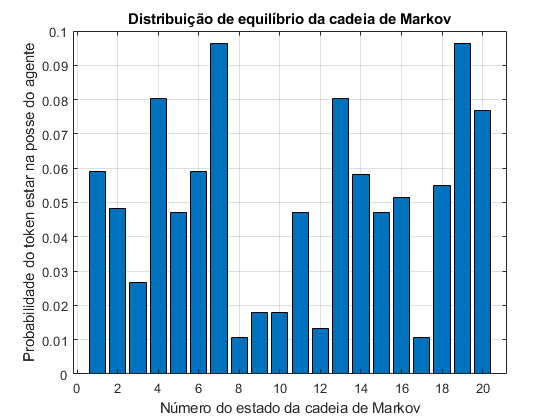 Olhando para o gráfico de barras poderia pensar-se que os estados mais prováveis eram os estados 7 e 19, no entanto correndo o código para encontrar os maiores estados apenas no dá o estado 7. Isto é porque, analisando os valores de normalize verifica-se que o estado 7 tem uma probabilidade de 0.096493187402279 e o estado 19 uma probabilidade de 0.096493187402278, por isso o código apenas retorna 7 como o estado com maior probabilidade. O mesmo acontece com os estados 8 e 17 para o cálculo do estado com menor probabilidade, visto que o estado 17 tem uma probabilidade um pouco menor. Assim sendo, se quiseremos ser rigorosos o estado com maior probabilidade é o estado 7 e o estado com menor probabilidade é o estado 8.
Exercício 2.b
close all clear all clc MarkovChain = load('MarkovChain.mat'); %parâmetros da simulação N = size(MarkovChain.nodePos,1); %numero de ancoras n = 2; %numero de dimensoes sidelength = 100; M = 10000; %numero de observações %posiçoes das âncoras a = [MarkovChain.nodePos(:,2) , MarkovChain.nodePos(:,3)]'; %posições das sources x = MarkovChain.sourcePos'; D = squareform(pdist([x zeros(size(x)) a]')); d = D(1,3:end); % Source-anchor distances an = D(2,3:end); % Anchor norms P0 = 100; mu = 0; sigma = 1e-2; %inicializa matrizes A = zeros(M,4); b = zeros(M,1); %ruido ni ni_space = [-0.1:.0002:0.1]; ni = normpdf(ni_space, mu, sigma); %%%%%%%%%%%%%%%%%%%%%%%%%%%%%%%%%%%%%%%%%%%%%%%%%%%%%%%%%%%%%%% %código da 2.a P = MarkovChain.P; [vectors, values] = eig(P'); old_diference = 10000; val_u = 1; %encontra o valor proprio mais perto de 1 for i = 1:size(values,1) diference = abs(values(i,i) - 1); if diference < old_diference old_diference = diference; value_index = i; end end %vector a normalizar vec_n = vectors(:,value_index); normalize = vec_n/sum(vec_n); %%%%%%%%%%%%%%%%%%%%%%%%%%%%%%%%%%%%%%%%%%%%%%%%%%%%%%%%%%%%%% %numero de vezes que cada âncora tem o token number_meas = normalize.*M; %aproximação para o número inteiro mais próximo number_meas = round(number_meas); %calcula as matrizes A e b j = 1; for i = 1:N meas = number_meas(i); if meas ~= 0 P(j) = (P0./(d(i).^2))*exp(ni(j)); A(j,1) = -2*P(j)*a(1,i); A(j,2) = -2*P(j)*a(2,i); A(j,3) = -1; A(j,4) = P(j); b(j) = -P(j)*(an(i)^2)'; j = j + 1; meas = meas-1; end end z = A\b; fprintf('Erro com %d mudanças de agente', M); x_estimated = z(1:n); error1 = norm(x-x_estimated) % RLS formulation (one-shot) % RlsPar = struct('lam',1); % [e,w,RlsPar] = qrrls(A,b,RlsPar); %error1 = norm(z-w) %x_estimated = [w(1) w(2)]'; figure(1) plot(a'*[1; 1i],'o'); hold all plot(x'*[1; 1i],'x');plot(x_estimated'*[1; 1i],'s'); hold off axis(sidelength*[0 1 0 1]); axis('square') title('Estimação da posição da source'); legend('Âncoras', 'Posição real da source', 'Posição estimada da source com 10000 mudanças'); xlabel('x'); ylabel('y'); figure(2) hold all plot(x'*[1; 1i],'x'); plot(x_estimated'*[1; 1i],'s'); axis([84.9999 85.0001 29.9999 30.0001]); title('Estimação da posição da source ampliada'); legend('Posição real da source', 'Posição estimada da source com 10000 mudanças', 'Location','southwest'); xlabel('x'); ylabel('y');
Erro com 10000 mudanças de agente error1 = 1.0658e-14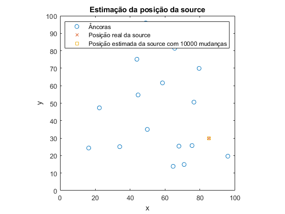 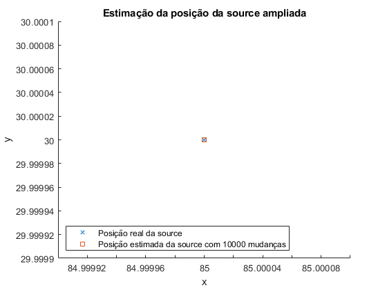
Decidiu-se usar a primeira formulação apresentada no ficheiro 'rssiloc.m' por ser a que apresentava um erro menor. Usando o algoritmo de mínimos quedrados com base na solução matricial consegue-se um resultado bastante fiel para a fonte estimada, dado um número elevado de transições. O erro nunca poderia ser zero devido ao ruído gaussiano na medição da potência da fonte, por isso consideramos o nosso erro de 1.0658e-14 bastante bom.
Exercício 2.c
clear all close all clc MarkovChain = load('MarkovChain.mat'); P = MarkovChain.P; %%%%%%%%%%%%%%%%%%%%%%%%%%%%%%%%%%%%%%%%%%%%%%%%%%%% %2.a (para usar mais a frente) [vectors, values] = eig(P'); old_diference = 10000; val_u = 1; %encontra o valor proprio mais perto de 1 for i = 1:size(values,1) diference = abs(values(i,i) - 1); if diference < old_diference old_diference = diference; value_index = i; end end %vector a normalizar vec_n = vectors(:,value_index); normalize = vec_n/sum(vec_n); %%%%%%%%%%%%%%%%%%%%%%%%%%%%%%%%%%%%%%%%%%%%%%%%%%%%% N = 20; time = 500; pi_array = zeros(N,time); %inicializar a matriz pi_array_0 %cada coluna corresponde ao vetor inicial para cada simulação pi_array_0 = zeros(N,4); %1º condição inicial -> começa no estado 7 pi_array_0(7,1) = 1; %2º condição inicial -> começa no estado 8 pi_array_0(8,2) = 1; %3º condição -> todos os estados têm a mesma probabilidade for i = 1:20 pi_array_0(i,3) = 1/20; end for i = 1:3 eq_time(i) = 0; end for j = 1:3 pi_array(:,1) = pi_array_0(:,j); for i = 2:time pi_array(:,i) = pi_array(:,1)'*P^(i); end %para comparar com os resultados da decomposição em valores e vetores %proprios (2.a) vamos calcular o tempo que demora a atingir o %equilíbrio for i = 1:time if pi_array(:,i) - normalize < 0.000001 eq_time(j) = i; break; end end figure(j) t_array = 1:1:time; anc=repmat(1:1:20, length(t_array), 1); plot3(t_array, anc, pi_array); end %verificar que para cada t soma de pi(t)= 1 for j = 1:3 for i = 1:time sum_pi(j,i) = sum(pi_array(:,i)); end end disp('Tempo para atingir o equilíbrio para cada condição:'); condicao1 = eq_time(1) condicao2 = eq_time(2) condicao3 = eq_time(3) disp('Provar que para cada instante de t a sompa de pi(t) = 1:'); sum1 = sum(sum_pi(1,:)) sum2 = sum(sum_pi(2,:)) sum3 = sum(sum_pi(3,:)) for j = 1:3 figure(j) if j == 1 title('Condição inicial -> âncora 7'); elseif j == 2 title('Condição inicial ->âncora 8'); elseif j == 3 title('Condição inicial -> igual probabilidade para todas as âncoras'); end xlabel('Tempo'); ylabel('Âncora'); zlabel('Probabilidade de ter o token'); end
Tempo para atingir o equilíbrio para cada condição: condicao1 = 325 condicao2 = 435 condicao3 = 376 Provar que para cada instante de t a sompa de pi(t) = 1: sum1 = 500 sum2 = 500 sum3 = 500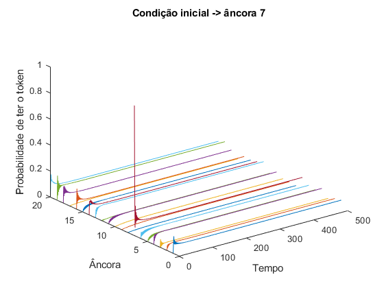 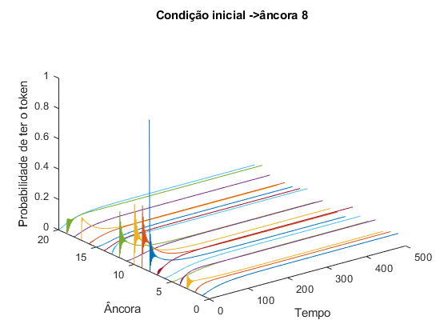 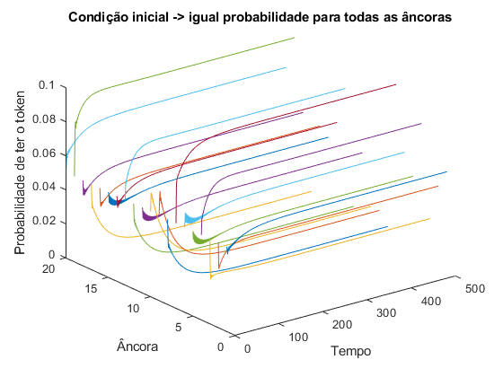
Decidiu-se fazer três simulações para estudar o impacto de 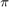(0) na evolução do sistema. Escolhemos para a primeira condição o token estar começar na âncora 7, pois como concluído na questão 2.a esta é a âncora que mais vezes tem o token por ter uma localização central e várias ligações, logo intuitivamente seria esta a condição inicial que conduziria a um tempo de equilíbrio menor, como foi comprovado. Para a segunda situação escolhemos o oposto da primeira, ou seja, colocou-se o token na âncora 8 que é a que possui menos vezes o token, logo será esta a que demora um maior tempo para atingir o equilíbrio. Na terceira condição, todas as âncoras têm uma igual probabilidade de possuir o token, logo o tempo para atingir o equilíbrio é algo no meio da situação inicial 1 e 2. Para provar que para cada instante de (t) a soma das suas probabilidades é 1 decidiu-se mostrar o somatório das probabilidades para todo o tempo , pois como o tempo é de 500, se o somatório for 500 é uma boa indicação que está tudo bem. Analisando a matriz sum_pi() pode-se confirmar isso, mas decidiu-se apresentar o resultado desta maneira para não saturar a Command Window.
Exercício 2.d
clear all close all clc MarkovChain = load('MarkovChain.mat'); worse_P = MarkovChain.P; better_P = worse_P; %refazer ligaçoes de P para melhor better_P(2,6) = 0.3; better_P(2,4) = 0.35; better_P(2,13) = 0.35; better_P(6,2) = 0.25; better_P(6,1) = 0.25; better_P(6,15) = 0.25; better_P(6,11) = 0.25; better_P(3,19) = 0.5; better_P(3,12) = 0.5; better_P(18,8) = 0.3; better_P(18,14) = 0.35; better_P(18, 16) = 0.35; better_P(8,9) = 0.35; better_P(8,12) = 0.35; better_P(8,18) = 0.3; better_P(20,5) = 0.25; better_P(20,1) = 0.25; better_P(20,7) = 0.25; better_P(20,14) = 0.25; %%%%%%%%%%%%%%%%%%%%%%%%%%%%%%%%%%%%%%%%%%%%%%%%%%%%%%% %calcular as probabilidades com a nova matriz de transições [vectors, values] = eig(better_P'); old_diference = 10000; val_u = 1; %encontra o valor proprio mais perto de 1 for i = 1:size(values,1) diference = abs(values(i,i) - 1); if diference < old_diference old_diference = diference; value_index = i; end end %vector a normalizar vec_n = vectors(:,value_index); normalize = vec_n/sum(vec_n); figure(1) bar(normalize); title('Distribuição de equilíbrio da cadeia de Markov melhorada'); xlabel('Número do estado da cadeia de Markov'); ylabel('Probabilidade do token estar na posse do agente'); box on; grid on; %%%%%%%%%%%%%%%%%%%%%%%%%%%%%%%%%%%%%%%%%%%%%%%%%%%%%%%%%%%%%% %estimar a localização da source sidelength = 100; N = 20; n = 2; M = 100; a = [MarkovChain.nodePos(:,2) , MarkovChain.nodePos(:,3)]'; x = MarkovChain.sourcePos'; D = squareform(pdist([x zeros(size(x)) a]')); d = D(1,3:end); % Source-anchor distances an = D(2,3:end); % Anchor norms P0 = 100; mu = 0; sigma = 1e-2; A = zeros(M,4); b = zeros(M,1); ni_space = [-0.1:.0002:0.1]; ni = normpdf(ni_space, mu, sigma); number_meas = normalize.*M; number_meas = round(number_meas); j = 1; for i = 1:N meas = number_meas(i); if meas > 0 better_P(j) = (P0./(d(i).^2))*exp(ni(j)); A(j,1) = -2*better_P(j)*a(1,i); A(j,2) = -2*better_P(j)*a(2,i); A(j,3) = -1; A(j,4) = better_P(j); b(j) = -better_P(j)*(an(i)^2)'; j = j + 1; meas = meas-1; end end z = A\b; % RLS formulation (one-shot) RlsPar = struct('lam',1); [e,w,RlsPar] = qrrls(A,b,RlsPar); fprintf('Erro com %d mudanças de agente na cadeia melhorada', M); x_estimated = z(1:n); error1 = norm(x-x_estimated) %error1 = norm(z-w) %x_estimated = [w(1) w(2)]'; figure(2) plot(a'*[1; 1i],'o'); hold all plot(x'*[1; 1i],'x'); plot(x_estimated'*[1; 1i],'s'); hold off axis(sidelength*[0 1 0 1]); axis('square') title('Estimação da posição da source com cadeia de Markov melhorada'); legend('Âncoras', 'Posição real da source', 'Posição estimada da source com 10000 mudanças'); %%%%%%%%%%%%%%%%%%%%%%%%%%%%%%%%%%%%%%%%%%%%%%%%%%%%%%%%%%%%%%%%%%%%%%%%%%%% %refazer ligações de P para pior worse_P = worse_P; worse_P(7,1) = 0.1; worse_P(7,20) = 0.7; worse_P(7,16) = 0.1; worse_P(7,19) = 0.1; worse_P(19,3) = 0.1; worse_P(19,4) = 0.6; worse_P(19,13) = 0.2; worse_P(19,7) = 0.1; %%%%%%%%%%%%%%%%%%%%%%%%%%%%%%%%%%%%%%%%%%%%%%%%%%%%%%% %calcular as probabilidades com a nova matriz de transições [vectors, values] = eig(worse_P'); old_diference = 10000; val_u = 1; %encontra o valor proprio mais perto de 1 for i = 1:size(values,1) diference = abs(values(i,i) - 1); if diference < old_diference old_diference = diference; value_index = i; end end %vector a normalizar vec_n = vectors(:,value_index); normalize = vec_n/sum(vec_n); figure(3) bar(normalize); title('Distribuição de equilíbrio da cadeia de Markov piorada'); xlabel('Número do estado da cadeia de Markov'); ylabel('Probabilidade do token estar na posse do agente'); box on; grid on; %%%%%%%%%%%%%%%%%%%%%%%%%%%%%%%%%%%%%%%%%%%%%%%%%%%%%%%%%%%%%% %estimar a localização da source sidelength = 100; N = 20; n = 2; M = 100; a = [MarkovChain.nodePos(:,2) , MarkovChain.nodePos(:,3)]'; x = MarkovChain.sourcePos'; D = squareform(pdist([x zeros(size(x)) a]')); d = D(1,3:end); % Source-anchor distances an = D(2,3:end); % Anchor norms P0 = 100; mu = 0; sigma = 1e-2; A = zeros(M,4); b = zeros(M,1); ni_space = [-0.1:.0002:0.1]; ni = normpdf(ni_space, mu, sigma); number_meas = normalize.*M; number_meas = round(number_meas); j = 1; for i = 1:N meas = number_meas(i); if meas > 0 worse_P(j) = (P0./(d(i).^2))*exp(ni(j)); A(j,1) = -2*worse_P(j)*a(1,i); A(j,2) = -2*worse_P(j)*a(2,i); A(j,3) = -1; A(j,4) = worse_P(j); b(j) = -worse_P(j)*(an(i)^2)'; j = j + 1; meas = meas-1; end end z = A\b; % RLS formulation (one-shot) RlsPar = struct('lam',1); [e,w,RlsPar] = qrrls(A,b,RlsPar); fprintf('Erro com %d mudanças de agente', M); x_estimated2 = z(1:n); error2 = norm(x-x_estimated2) %error2 = norm(z-w) %x_estimated2 = [w(1) w(2)]'; figure(4) plot(a'*[1; 1i],'o'); hold all plot(x'*[1; 1i],'x'); plot(x_estimated2'*[1; 1i],'s'); hold off axis(sidelength*[0 1 0 1]); axis('square') title('Estimação da posição da source com cadeia de Markov piorada'); legend('Âncoras', 'Posição real da source', 'Posição estimada da source com 10000 mudanças');
Erro com 100 mudanças de agente na cadeia melhorada error1 = 1.0658e-14 Erro com 100 mudanças de agente error2 = 1.5888e-14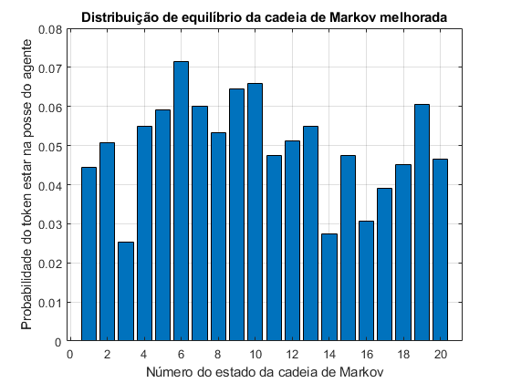 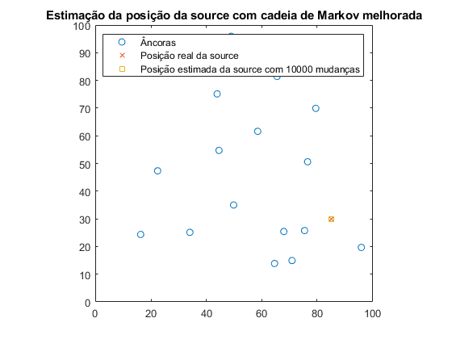 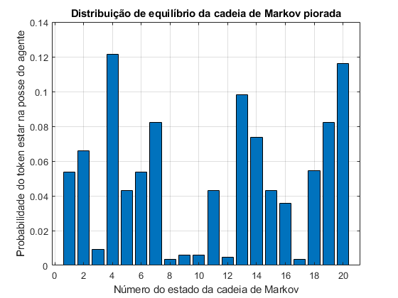 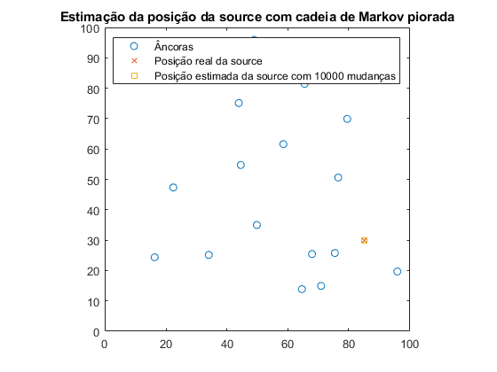
Olhando para a matriz de transmissão P é possivel concluir algumas coisas. Em primeiro, destaca-se a olho a existência de dois grandes subgrupos, isto é, o grupo do lado esquerdo da ligação 7-19 e o grupo do lado direito desta ligação. Ambos estes grafos têm uma probabilidade de 0.25 de transitarem para o outro, o que mostra como pode ser difícil para o token passar de um lado para o outro, pois estes grafos são os únicos pontos de ligação de um sub-grupo para o outro. Mesmo dentro destes sub-grupos o token não percorre os grafos de maneira equitativa. A ponto de referência referimos por exemplo que a probabilidade do token passar do grafo 3 para o 12 é de 0.1, ou que para passar do 1 para o 6 é de 0.2, sendo que estes dois grafos são a única ligação para alguns grafos. Portanto, é necessário refazer a cadeia de Markov para o token poder passar por mais agentes em vez de passar bastante tempo na posse dos mesmos agentes. Observando as primeiras duas figuras conluímos que a distribuição dos estados mais e menos provável está bastante mais equilibrada que no exercício 2.a, e que o erro da cadeia melhorada também é um pouco melhor, Decidimos reduzir o número de transições de 10000 (2.b) para 100, de forma a podermos observar diferença na estimação da source, pois para 10000 transições ambas as cadeias davam o mesmo erro.
Exercício 3a e 3b
part3Exe(1000, 1000, 0, 1);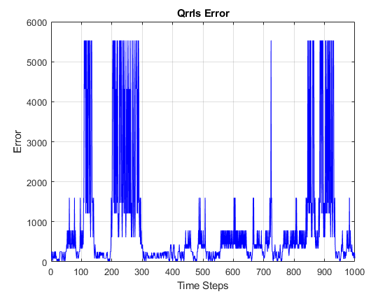 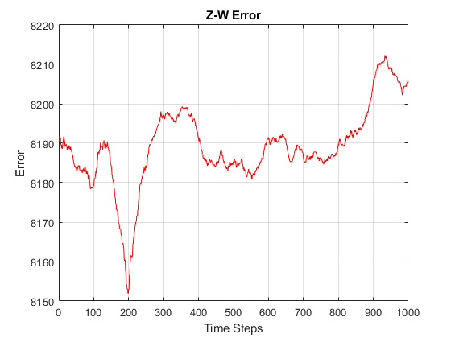 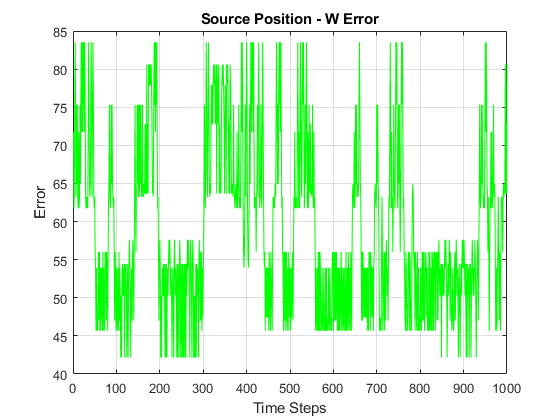 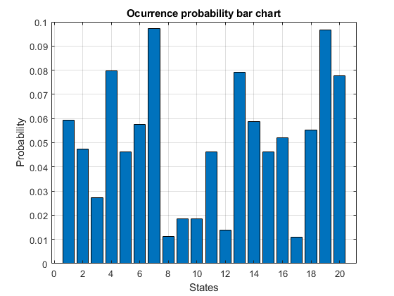
Conseguimos verificar que a distribuição dos estados e a frequência dos mesmos corresponde ao obtido na secção 2. Obtivémos o mesmo gráfico de barras para a distribuição de equilibrio da cadeia de Markov. Conseguimos concluir também que quanto mais alto o número de runs ou de instantes de tempo que se quer analisar, melhores serão os resultados, e o tempo de convergência reduz-se. Isto é uma das características do algoritmo de estimação de Monte Carlo.
Exercício 3c
part3Exe(1000, 1000, 1, 1); %lambda = 1
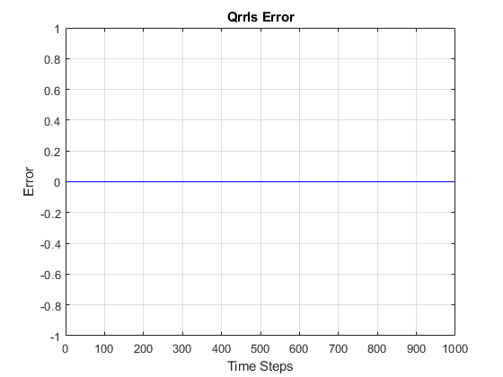 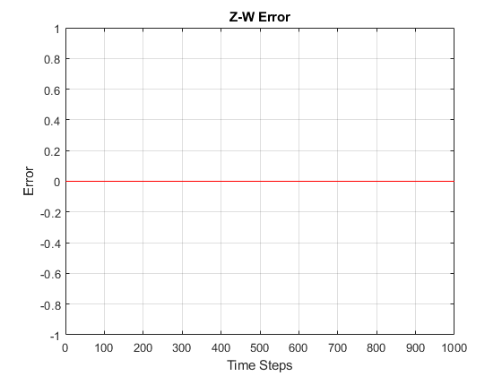 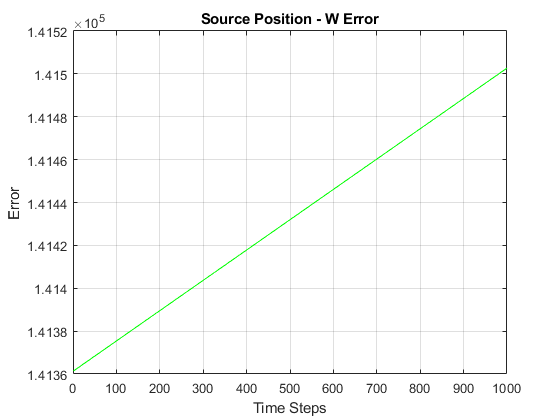 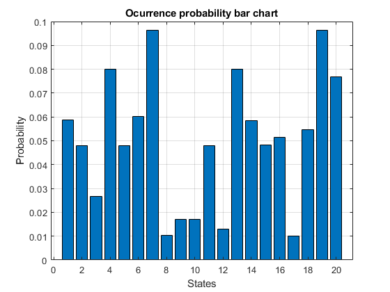 Functions - part3Exe
type('part3Exe.m')
function part3Exe(n_runs, steps, slow, lambda)
info = importdata('MarkovChain.mat'); %information about the problem
P = info.P;
info.nodePos(:,1) = [];
npos = info.nodePos'; %a
spos = info.sourcePos'; %x
n_anchor = length(info.P); %number of steps on the Markov
tok_node = ceil((rand()*19)+1); %generate random initial condition
[xe, esterror, error_zw, error, vec_w, statepath, poserror] = execute(spos, npos, P, tok_node, n_runs, steps, slow, lambda);
mode_state = mode(statepath(:)); %most frequent state
for i =1:length(npos) %creates ocurrences vector
occur(i) = nnz(statepath==i);
end
occur = occur/sum(occur);
% Plots
figure(1)
plot(1:steps, error, '-b');
grid on
title('Qrrls Error');
xlabel('Time Steps');
ylabel('Error');
figure(2)
plot(1:steps, error_zw, '-r');
grid on
title('Z-W Error');
xlabel('Time Steps');
ylabel('Error');
figure(3)
plot(1:steps, poserror, '-g');
grid on
title('Source Position - W Error');
xlabel('Time Steps');
ylabel('Error');
figure(4)
bar(occur);
grid on
title('Ocurrence probability bar chart');
xlabel('States');
ylabel('Probability');
end
Functions - execute
type('execute.m')
function [xe, poserr, error_zw, error, vec_w, statepath, poserror] = execute(spos, npos, P, tok_node, n_runs, steps, slow, lambda)
[Powr, an] = PowrGen(spos, npos);
h = waitbar(0,'Please wait...');
for n = 1:n_runs
for c = 1:steps
if slow == 1 %if slow mode activated
spos = spos+0.1; %moves per interation
[Powr, an] = PowrGen(spos, npos); %new powr
end
tok_node = find(cumsum([P(tok_node,:)]) > rand,1,'first'); %next node
statepath(n,c) = tok_node;
% Localize source by least-squares
A(c,:) = [-2*repmat(Powr(1,tok_node),[2 1]).*npos(:,tok_node); -1; Powr(1,tok_node)]';
b(c,:) = (-Powr(1,tok_node)*norm(an(tok_node))^2)';
z = A\b;
xe(1,c) = z(1);
xe(2,c) = z(2);
poserr(c) = norm(spos-xe); %estimation error
% RLS formulation (incremental)
RlsPar = struct('lam',lambda);
[e,w,RlsPar] = qrrls(A(c,:),b(c),RlsPar);
error(c) = abs(e);
vec_w(1,c) = w(1);
vec_w(2,c) = w(2);
error_zw(c) = norm(z-w);
poserror(c) = norm(spos-w(1:2));
end
waitbar(n/n_runs);
end
close(h);
end
Functions - PowrGen
type('PowrGen.m')
function [Powr, an] = PowrGen(spos,npos) D = squareform(pdist([spos zeros(size(spos)) npos]')); d = D(1,3:end); % Source-anchor distances an = D(2,3:end); % Anchor norms % Generate observations Pow0 = 100; % Source power Powr = Pow0./(d.^2); % Noiseless RSSI stdev = 1e-1; % Log-noise standard deviation %stdev = 0; Powr = Powr.*exp(stdev*randn(size(Powr))); % Introduce noise QP = 1e-2; Powr = QP*round(Powr/QP); % Quantize power measurements end